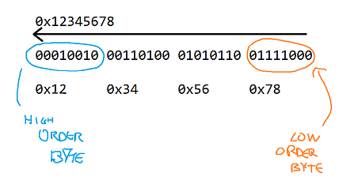
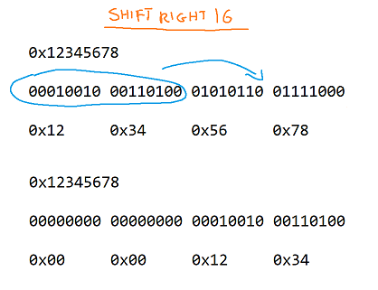

# Bitshifts
•
https://chortle.ccsu.edu/java5/Notes/chap85/ch85_12.html•
https://stackoverflow.com/questions/9486192/obtain-low-and-high-order-nybbles-from-byte-within-java-bytebuffer•
https://en.wikipedia.org/wiki/Bitwise_operations_in_C#Shift_operatorsBitshifts are how you shift bits in a number.
>> shift bits to the right
<< shift bits to the left
Here's a value:
0x12345678Here's what it looks like in binary:
00010010 00110100 01010110 011110000x12 0x34 0x56 0x78The low order byte in
0x12345678 is
0x78The high order byte is
0x12By shifting 24 bits to the right, you can retrieve the high order byte -
0x12.
By shifting 16 bits to the right, you can retrieve the 2 high order bytes
0x1234.
#include <stdio.h>
int main()
{
int val1 = 0x12345678;
printf("val 1: 0x%x \n", val1);
printf("\t 2 lower bytes: 0x%x \n", val1 & 0x0000ffff);
printf("\t 2 higher bytes: 0x%x \n", (val1 >> 16) & 0x0000ffff);
int val2 = 0xABCD;
printf("val 2: 0x%x \n", val2);
printf("\t lower byte: 0x%x \n", val2 & 0x00ff);
printf("\t higher byte: 0x%x \n", (val2 >> 8) & 0x00ff);
return 0;
}